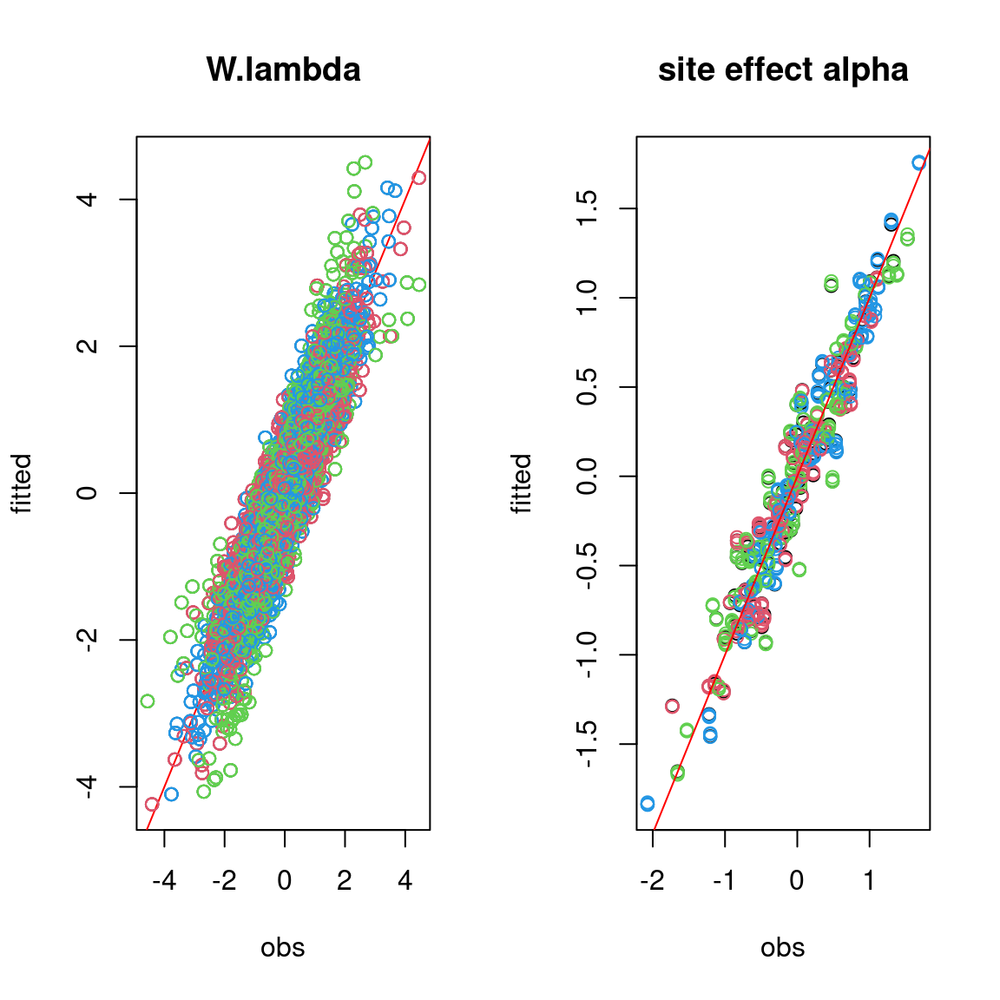

1 Generating data for a Hierarchical Gaussian Linear Regression
1.1 Binomial model for presence-absence data
We consider a latent variable model (LVM) to account for species co-occurrence on all sites (Warton et al. 2015).
\[y_{ij} \sim \mathcal{B}ernoulli(\theta_{ij})\]
\[ \mathrm{g}(\theta_{ij}) =\alpha_i + X_i\beta_j + W_i\lambda_j \]
- \(\mathrm{g}(\cdot)\): Link function (eg. logit or probit).
- \(\alpha_i\): Site random effect with \(\alpha_i \sim \mathcal{N}(0, V_{\alpha})\). Corresponds to a mean suitability for site \(i\).
- \(X_i\): Vector of explanatory variables for site \(i\) (including intercept).
- \(\beta_j\): Effects of the explanatory variables on the probability of presence of species \(j\).
- \(W_i\): Vector of random latent variables for site \(i\). \(W_i \sim N(0, 1)\). The number of latent variables must be fixed by the user (default to 2).
- \(\lambda_j\): Effects of the latent variables on the probability of presence of species \(j\). Also known as “factor loadings” (Warton et al. 2015).
This model is equivalent to a multivariate GLMM \(\mathrm{g}(\theta_{ij}) =\alpha_i + X_i.\beta_j + u_{ij}\), where \(u_{ij} \sim \mathcal{N}(0, \Sigma)\) with the constraint that the variance-covariance matrix \(\Sigma = \Lambda \Lambda^{\prime}\), where \(\Lambda\) is the full matrix of factor loadings, with the \(\lambda_j\) as its columns.
1.2 Data-set simulation
We generate presence-absence data following this generalized multivariate linear model with a probit link function, which includes latent variables and random site effect.
#================= #== Load libraries library(jSDM) #================== #== Data simulation #= Number of sites nsite <- 210 #= Set seed for repeatability seed <- 1234 set.seed(seed) #= Number of species nsp<- 70 #= Number of latent variables n_latent <- 2 #= Ecological process (suitability) x1 <- rnorm(nsite,0,1) x2 <- rnorm(nsite,0,1) X <- cbind(rep(1,nsite),x1,x2) np <- ncol(X) #= Latent variables W W <- cbind(rnorm(nsite,0,1),rnorm(nsite,0,1)) data <- cbind (X,W) #= Fixed species effect beta beta.target <- t(matrix(runif(nsp*ncol(X),-2,2), byrow=TRUE, nrow=nsp)) #= Factor loading lambda l.zero <- 0 l.diag <- runif(2,0,2) l.other <- runif(nsp*n_latent-3,-2,2) lambda.target <- t(matrix(c(l.diag[1],l.zero, l.other[1],l.diag[2],l.other[-1]), byrow=TRUE, nrow=nsp)) param.target <- rbind(beta.target,lambda.target) #= Variance of random site effect V_alpha.target <- 0.5 #= Random site effect alpha.target <- rnorm(nsite,0,sqrt(V_alpha.target)) #= probit(theta) probit_theta<-X%*%beta.target + W%*%lambda.target + alpha.target # Latent variable Z e <- matrix(rnorm(nsp*nsite,0,1),nsite,nsp) Z_true <- probit_theta + e # Presence-absence matrix Y Y <- matrix (NA, nsite,nsp) for (i in 1:nsite){ for (j in 1:nsp){ if ( Z_true[i,j] > 0) {Y[i,j] <- 1} else {Y[i,j] <- 0} } } colnames(Y) <- paste0("Species", 1:nsp) head(Y) save(Y, Z_true, alpha.target, V_alpha.target, beta.target, probit_theta, X, lambda.target, np , nsite, nsp, n_latent, W, file="jSDM_in_parallel_files/sim_data.rda")
We look at the number of observations per site.
load("jSDM_in_parallel_files/sim_data.rda") # Number of observations per site nobs_site <- apply(Y, 1, sum) nobs_site #> [1] 19 39 29 37 31 36 38 53 57 32 30 29 32 42 35 37 32 23 49 29 22 19 23 39 29 #> [26] 36 31 27 29 20 30 37 29 26 41 26 40 38 36 36 30 31 14 45 25 33 28 37 31 32 #> [51] 32 31 39 36 33 39 32 33 27 39 27 33 41 44 32 40 28 24 42 38 37 34 29 21 29 #> [76] 36 37 39 49 28 36 40 41 30 29 31 33 34 41 28 34 35 19 28 21 38 34 31 37 43 #> [101] 40 34 41 52 36 30 44 39 18 44 28 33 33 41 25 25 36 48 24 49 30 39 32 38 32 #> [126] 44 28 49 39 39 32 56 25 23 53 32 20 33 54 29 33 32 27 26 40 41 33 30 54 33 #> [151] 38 40 44 17 48 27 30 30 54 28 33 30 33 12 33 31 42 28 50 21 30 30 44 29 28 #> [176] 50 31 28 31 24 33 44 37 42 31 25 33 31 44 39 43 38 28 25 41 47 31 32 44 34 #> [201] 47 24 19 40 30 36 34 29 23 44 # Number of observations per species nobs_sp <- apply(Y, 2, sum) nobs_sp #> Species1 Species2 Species3 Species4 Species5 Species6 Species7 Species8 #> 24 102 133 122 115 127 49 95 #> Species9 Species10 Species11 Species12 Species13 Species14 Species15 Species16 #> 52 129 79 75 51 41 139 66 #> Species17 Species18 Species19 Species20 Species21 Species22 Species23 Species24 #> 110 128 103 123 102 75 118 138 #> Species25 Species26 Species27 Species28 Species29 Species30 Species31 Species32 #> 119 145 81 63 87 130 138 108 #> Species33 Species34 Species35 Species36 Species37 Species38 Species39 Species40 #> 158 150 169 102 82 61 103 72 #> Species41 Species42 Species43 Species44 Species45 Species46 Species47 Species48 #> 26 94 129 158 161 63 97 116 #> Species49 Species50 Species51 Species52 Species53 Species54 Species55 Species56 #> 136 137 94 156 80 56 84 52 #> Species57 Species58 Species59 Species60 Species61 Species62 Species63 Species64 #> 71 122 146 64 102 154 66 158 #> Species65 Species66 Species67 Species68 Species69 Species70 #> 51 139 54 135 121 73
2 Fitting joint Species Distribution Models in parallel
We simulate in parallel two Monte-Carlo Markov chains (MCMC) of parameters values for this binomial model, using the R packages doParallel and foreach in a first time and snow and snowfall in a second time.
2.1 Using doParallel and foreach
We estimate the model parameters with the function jSDM_binomial_probit_block().
library(parallel) library(doParallel) ## Make a cluster for parallel MCMCs nchains <- 2 ncores <- nchains ## One core for each MCMC chains clust <- makeCluster(ncores) registerDoParallel(clust) # Number of latent variables nl <- 2 # Starting parameters lambda_start <- c(-1,1) beta_start <- c(-1,1) W_start <- c(0,-0.1) alpha_start <- c(-1, 1) V_alpha_start <- c(1, 2) #formatting of starting parameters #and constraints on lambda generated by the function # Seeds seed_mcmc <- c(1234, 4321)
# Model mod_probit_1 <- foreach (i = 1:nchains) %dopar% { # Infering model parameters mod <- jSDM::jSDM_binomial_probit_block( # Iterations burnin=25000, mcmc=25000, thin=25, # Data presence_site_sp=Y, site_data = X[,-1], site_suitability = ~., # Model specification n_latent=nl, site_effect="random", # Priors V_beta = 10, mu_beta = 0, mu_lambda = 0, V_lambda= 10, shape=0.5, rate=0.0005, # Starting values beta_start = beta_start[i], lambda_start = lambda_start[i], W_start=W_start[i], alpha_start = alpha_start[i], V_alpha = V_alpha_start[i], # Other seed = seed_mcmc[i], verbose = 1 ) return(mod) } # Stop cluster stopCluster(clust) save(mod_probit_1, file="jSDM_in_parallel_files/mod_probit_1.rda")
load("jSDM_in_parallel_files/mod_probit_1.rda") # Output length(mod_probit_1) #> [1] 2 m1 <- mod_probit_1[[1]] str(m1, max.level = 1) #> List of 8 #> $ mcmc.Deviance : 'mcmc' num [1:1000, 1] 7728 7762 7750 7791 7794 ... #> ..- attr(*, "mcpar")= num [1:3] 25001 49976 25 #> ..- attr(*, "dimnames")=List of 2 #> $ mcmc.alpha : 'mcmc' num [1:1000, 1:210] -1.239 -1.064 -0.721 -1.208 -0.645 ... #> ..- attr(*, "mcpar")= num [1:3] 25001 49976 25 #> ..- attr(*, "dimnames")=List of 2 #> $ mcmc.V_alpha : 'mcmc' num [1:1000, 1] 0.589 0.574 0.659 0.651 0.557 ... #> ..- attr(*, "mcpar")= num [1:3] 25001 49976 25 #> ..- attr(*, "dimnames")=List of 2 #> $ mcmc.sp :List of 70 #> $ mcmc.latent :List of 2 #> $ Z_latent : num [1:210, 1:70] -3.98 -1.32 -1.84 -2.25 -1.71 ... #> $ probit_theta_pred: num [1:210, 1:70] -3.96 -1.11 -1.78 -2.17 -1.57 ... #> $ model_spec :List of 24 #> - attr(*, "class")= chr "jSDM"
2.2 Using snow and snowfall
## Load libraries library(snow) library(snowfall) ## Setting the number of CPUs to be 2 sfInit(parallel=TRUE, cpus=2) ## Assigning the jSDM library to each CPU sfLibrary(jSDM) # Number of latent variables nl <- 2 # Starting parameters # formatting of starting parameters # and constraints on lambda generated by the function lambda_start <- c(-2, 2) beta_start <- c(-2,2) W_start <- c(0.2,-0.2) alpha_start <- c(-2, 2) V_alpha_start <- c(2, 3) # Seeds seed_mcmc <- c(123, 321) # list of data and starting parameters listData <- list(Y=Y, X=X[,-1], beta_start, lambda_start, W_start, alpha_start, V_alpha_start, seed_mcmc)
## Defining the function that will run MCMC on each CPU # Arguments: # i - will be 1 or 2 mod.MCMChregress <- function (i,listData) { # data Y <- listData[[1]] X <- listData[[2]] beta_start <- listData[[3]] lambda_start <- listData[[4]] W_start <- listData[[5]] alpha_start <- listData[[6]] V_alpha_start <- listData[[7]] seed_mcmc <- listData[[8]] # Infering model parameters mod <- jSDM_binomial_probit_block( # Iterations burnin=25000, mcmc=25000, thin=25, # Data presence_site_sp=Y, site_data = X, site_suitability = ~., # Model specification n_latent=2, site_effect="random", # Priors V_beta = 10, mu_beta = 0, mu_lambda = 0, V_lambda= 10, shape=0.5, rate=0.0005, # Starting values beta_start = beta_start[i], lambda_start = lambda_start[i], W_start = W_start[i], alpha_start = alpha_start[i], V_alpha = V_alpha_start[i], # Other seed = seed_mcmc[i], verbose = 1 ) return(mod) }# Starting parameters ## Calling the sfLapply function that will run on each of the CPUs mod_probit_2 <- sfLapply(1:2, fun=mod.MCMChregress, listData=listData) ## Stop cluster sfStop() save(mod_probit_2, file="jSDM_in_parallel_files/mod_probit_2.rda")
load("jSDM_in_parallel_files/mod_probit_2.rda") # Output length(mod_probit_2) #> [1] 2 m2 <- mod_probit_2[[1]] str(m2, max.level = 1) #> List of 8 #> $ mcmc.Deviance : 'mcmc' num [1:1000, 1] 7793 7710 7796 7718 7760 ... #> ..- attr(*, "mcpar")= num [1:3] 25001 49976 25 #> ..- attr(*, "dimnames")=List of 2 #> $ mcmc.alpha : 'mcmc' num [1:1000, 1:210] -1.82 -1.3 -1.42 -1.55 -1.13 ... #> ..- attr(*, "mcpar")= num [1:3] 25001 49976 25 #> ..- attr(*, "dimnames")=List of 2 #> $ mcmc.V_alpha : 'mcmc' num [1:1000, 1] 0.668 0.682 0.637 0.659 0.631 ... #> ..- attr(*, "mcpar")= num [1:3] 25001 49976 25 #> ..- attr(*, "dimnames")=List of 2 #> $ mcmc.sp :List of 70 #> $ mcmc.latent :List of 2 #> $ Z_latent : num [1:210, 1:70] -3.89 -1.33 -1.95 -2.24 -1.75 ... #> $ probit_theta_pred: num [1:210, 1:70] -3.93 -1.07 -1.85 -2.17 -1.62 ... #> $ model_spec :List of 24 #> - attr(*, "class")= chr "jSDM"
3 Evaluation of MCMC convergence
We evaluate the convergence of the MCMC output in which four parallel chains are run with starting values that are overdispersed relative to the posterior distribution. Convergence is diagnosed when the four chains have ‘forgotten’ their initial values, and the output from all chains is indistinguishable. If the convergence diagnostic gives values substantially above 1, its indicates lack of convergence.
#> Loading required package: coda
#> psrf_lv: 1.674599
#> alpha: 1.107449
#> psrf_V_alpha: 1.000273
#> psrf_beta: 1.005244 Representation of results
## Plot trace and posterior distributions # for two first species plot(mcmc_list_param[,1:((np+n_latent)*2)])


par(mfrow=c(1,2)) coda::traceplot(mcmc_list_V_alpha) coda::densplot(mcmc_list_V_alpha) abline(v=V_alpha.target, col='red') legend("topright", legend="V_alpha.target", lwd=1,col='red', cex=0.6, bty="n")


# Deviance plot(mcmc_list_deviance)

5 Accuracy of predictions
## Predictive posterior mean for each observation nchains <- length(mod_probit) # Species effects beta and factor loadings lambda par(mfrow=c(1,2)) for (i in 1:nchains){ param <- matrix(unlist(lapply(mod_probit[[i]]$mcmc.sp,colMeans)), nrow=nsp, byrow=T) if(i==1){ plot(t(beta.target), param[,1:np], main="species effect beta", xlab ="obs", ylab ="fitted") abline(a=0,b=1,col='red') } else{ points(t(beta.target), param[,1:np], col=2:nchains) } } for (i in 1:nchains){ param <- matrix(unlist(lapply(mod_probit[[i]]$mcmc.sp,colMeans)), nrow=nsp, byrow=T) if (i==1){ plot(t(lambda.target), param[,(np+1):(np+n_latent)], main="factor loadings lambda", xlab ="obs", ylab ="fitted") abline(a=0,b=1,col='red') } else { points(t(lambda.target), param[,(np+1):(np+n_latent)], col=2:nchains) } }

## W latent variables par(mfrow=c(1,2)) for (l in 1:n_latent) { for (i in 1:nchains){ if (i==1){ plot(W[,l], summary(mod_probit[[i]]$mcmc.latent[[paste0("lv_",l)]])[[1]][,"Mean"] ,main = paste0("Latent variable W_", l), xlab ="obs", ylab ="fitted") abline(a=0,b=1,col='red') } else{ points(W[,l], summary(mod_probit[[i]]$mcmc.latent[[paste0("lv_",l)]])[[1]][,"Mean"] ,col=2:nchains) } } }

#= Random site effect alpha par(mfrow=c(1,1)) plot(alpha.target, colMeans(mod_probit[[1]]$mcmc.alpha), xlab ="obs", ylab ="fitted", main="site effect alpha") for (i in 2:nchains){ points(alpha.target, colMeans(mod_probit[[i]]$mcmc.alpha), col=2:nchains) } abline(a=0,b=1,col='red')

#= Predictions par(mfrow=c(1,2)) plot(probit_theta, mod_probit[[1]]$probit_theta_pred, main="probit(theta)",xlab="obs",ylab="fitted") for (i in 2:nchains){ ## probit(tetha) points(probit_theta, mod_probit[[i]]$probit_theta_pred,col=c(2:nchains)) } abline(a=0,b=1,col='red') ## Z plot(Z_true, mod_probit[[1]]$Z_latent, main="Z_latent", xlab="obs", ylab="fitted") for (i in 2:nchains){ points(Z_true, mod_probit[[i]]$Z_latent, col=2:nchains) } abline(a=0,b=1,col='red')